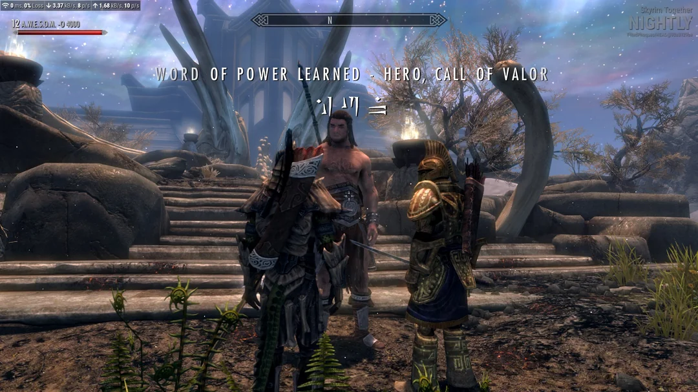
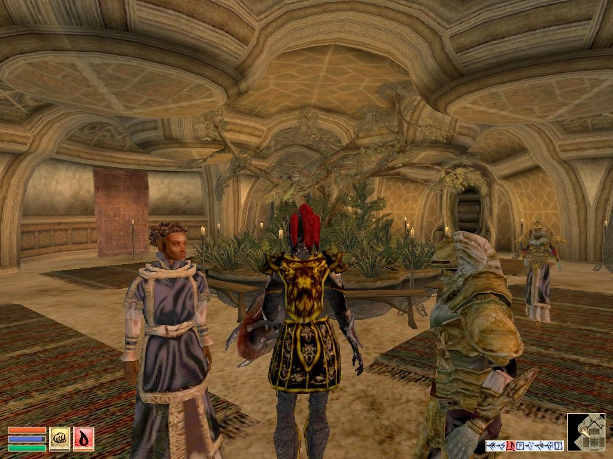
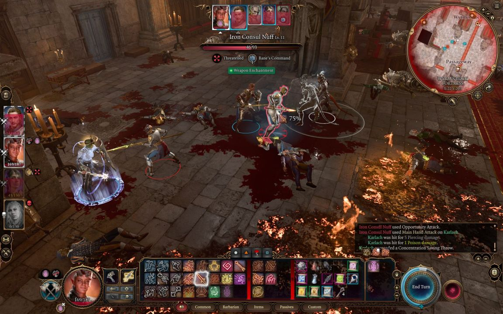
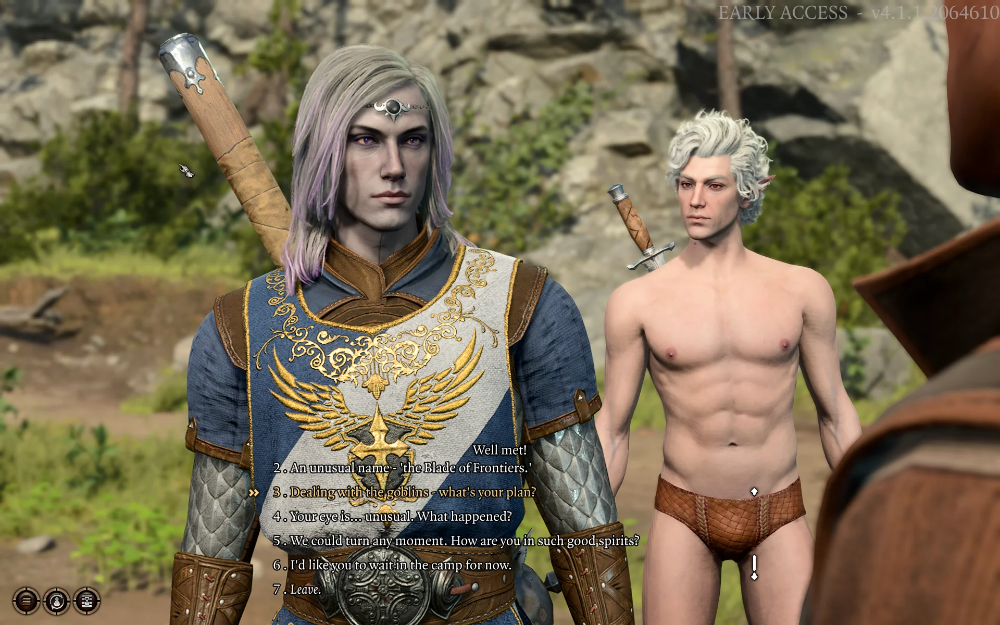
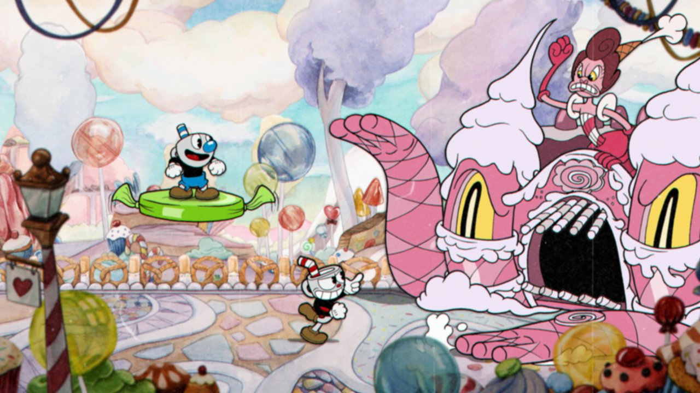
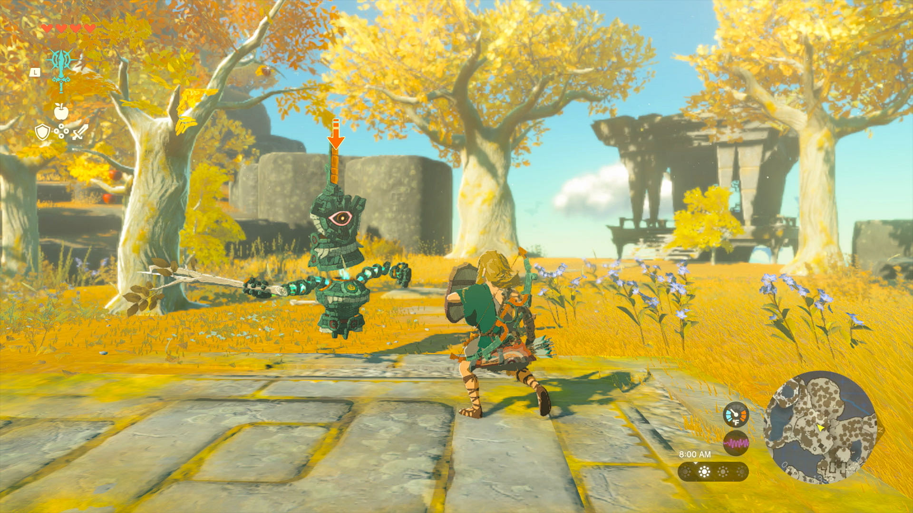
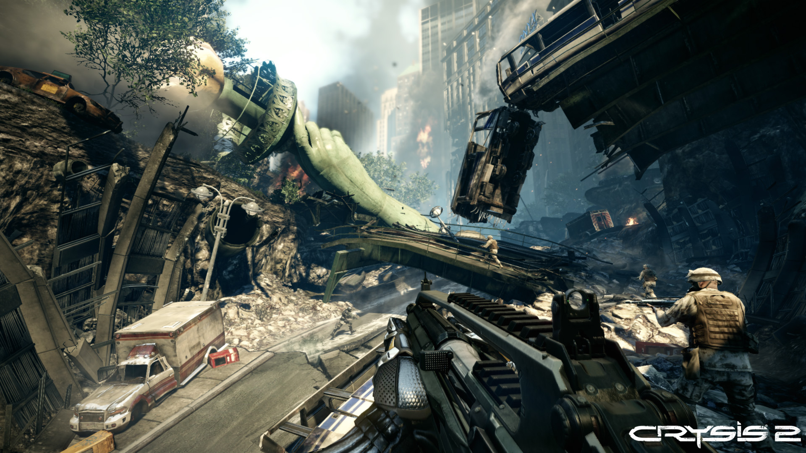
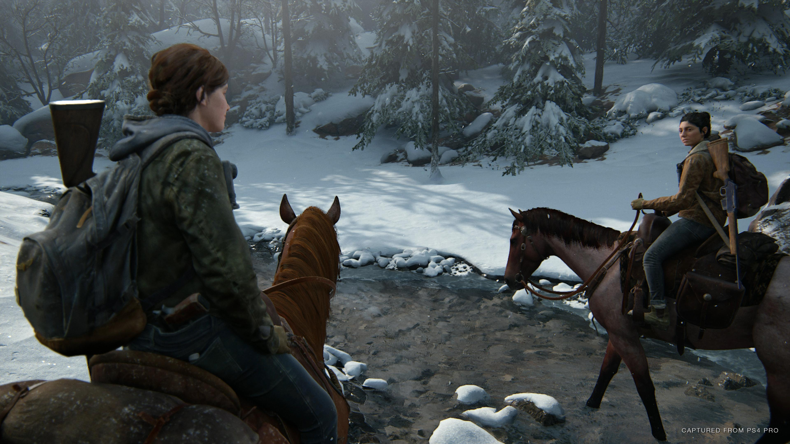

Вкус как недооцененный компонент реалистичности графики
Твой язык знает, как все вокруг чувствуется.
Попробуй посмотреть на любой предмет вокруг — стену, тарелку, подушку — и представить, как ты его лижешь. Ты сможешь достаточно хорошо представить вкус и текстуру. Объясняют это тем, что в ранние годы младенцы познают мир, в основном, на вкус, таща все в рот, и мозг тренируется на сенсорную природу реальности через язык. Я не знаю, насколько это справедливое объяснение, но это точно справедливое наблюдение.
Реальный мир для меня никогда не был таким уж реальным, поэтому очевидная для меня мысль — а что насчет вкуса виртуальных предметов в видеоиграх? По поводу того, как выглядит хорошая, реалистичная графика, было сломано много копий — культура уже поняла, что “как на фотографии” это плохой критерий — но какой есть хороший?
Мой органолептический метод может дать объективное измерение. Чем легче тебе почувствовать вкус предмета в игре ясновкушанием, чем меньше для этого надо напрягать воображение — тем лучше твой мозг на самом деле “погрузился” и воспринял предмет за реальный. Не надо считать полигоны и философствовать по поводу того, как должен выглядеть реалистичный хадокен — можно напрямую спросить свой мозг — верит он или нет.
Конечно, разные люди могут обманываться в разной мере — о вкусах не спорят. Но с точки зрения измерений это уже шаг вперед от селф-репортинга к психометрике. Посмотрим, насколько обманывыется мой мозг. И жду ваших репортов, какую графику считает реалистичнее ваше подсознание!
Я взяла случайные игры, показывающие разные уровни реалистичности графики. Все тесты проведены либо на самой игре, либо на видео. Статичные скриншоты обманывают хуже и приведены здесь только для референса.
Skyrim

Неплохо! Все порой чувствуется “приглушенно”, словно обернуто в целлофан, но при небольшой концентрации можно даже окунуть язык в густой нордский суп.
4/5, верю.
Morrowind

В сравнении со Скайримом — интересно получается. Люди, предметы, оружие — не вызывают никакого отклика. Но почему-то природные объекты — камни, деревья, листва — чувствуются намного ярче, чем в Skyrim! Во время дождя даже ощущается четкий петрихор, вкус гнили порой. Все хайпают, какая красивая природа в Skyrim, но даже если она красивая, она, видимо, слишком выхолощена, чтобы я поверила. А в Morrowind атмосфера!
2/5 — избирательно, но что-то есть!
Baldur's Gate III


Увы, увы. Во время стандартного геймплея вокруг слишком много всяких обводок, абстрактных спецэффектов и прочей нарушающей дзен ерунды, отклика такая графика не вызывает нисколько, язык обманывается не сильнее Морровинда. Во время катсцен, когда камера ближе и все четче — людей все же почувствовать можно, пусть они и немного пластиковые. Это тот пример, когда динамика важна — на скриншотах графика BGIII выглядит четче, но в процессе игры в Скайрим мой мозг верит намного лучше. И еда — в Skyrim намного вкуснее, чем те обрезки, что есть в BGIII.
2/5 — сори, но нет. Детализованность не значит реализм.
Cuphead

Практически никакой реакции. Рисовка красивая, но никакой заявки на реализм и погружение не делает и не имеет. Не значит, что это плохо — оно красиво и стильно — но, конечно, не верю.
1/5, мозг не обманывается, чего и следовало ожидать.
Legend of Zelda, Tears of the Kingdom

Нисколько. Опять же, красиво, милашно, но мозг не верит, все очевидно искусственное и игрушечное. Сравнивая с Morrowind, становится понятно, что низкой детализации графика, старающаяся быть реалистичной, достигает большего погружения, чем более детальная, но не делающая такой заявки. Напрашивается вывод — если вы делаете графику без заявки на реализм, то добавлять крутых шейдеров с пробивающимися сквозь листву лучами и триде-туманом нет смысла.
1/5, да, хуже Морровинда, там хотя бы ряска вкусная была.
Crysis 2

Это же крузис у нас пошел all-in на реализм? Проверим…
Тот редкий случай, когда в статике вкуснее, чем в динамике. Все портит motion blur, превращая картинку в мутное мыло. Найти видео, где персонаж в этой игре двигается медленно или не двигается вообще, было непросто, но в такие моменты — да, верю. Напрашивается урок — нет смысла делать супер-красивую графику, когда в самые лучшие моменты игрок ее и не видит вовсе. Оно будет хорошо выглядеть на скриншотах и может дать вау-эффект на ранних стадиях, но непосредственно игровой опыт оно не улучшит никак.
3/5, верю, но редко.
Last of Us 2

Та игра, которая больше всего заставила меня “верить” и была проверена чисто в поисках чего-то, чему я могу дать 5/5. Здесь, да, язык все чувствует. Несмотря на регулярные артефакты, мозг верит.
5/5.
Выводы
- Стиль влияет больше, чем детализация. Morrowind для своего количества полигонов и качества текстур вызвал больший отклик, чем TOTK, потому что он пытается погрузить в физику мира, а TOTK намеренно мультяшна.
- Если вашу графику надо блюрить, чтобы она могла завестись на данном железе, то лучше сделайте поменьше полигонов, но без блюра. Будет выглядеть хуже на скриншотах и трейлерах, но лучше для того, кто играет.
- Готовка в Тамриэле вкуснее готовки в Фаэруне.